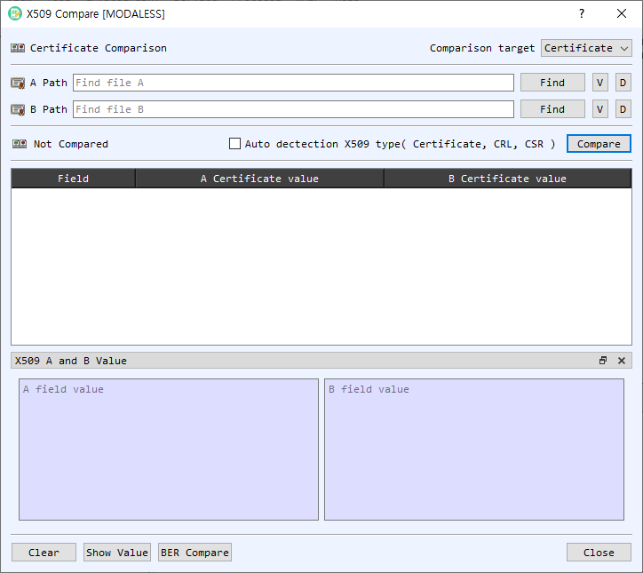

X.509 Compare
The X509 Compare dialog compares two X.509 objects and displays corresponding fields side by side. It supports certificates, certificate revocation lists (CRLs), and certificate signing requests (CSRs).

Select inputs
| Control | Description |
|---|---|
| Comparison target | Select Certificate, CRL, or CSR. |
| A Path / B Path | Paths to the two input files. You can use Find or drop files onto the dialog; dropped files fill A first and then B. |
| Find | Selects an input file matching the chosen comparison type. |
| V | Opens the selected object in its detail viewer. |
| D | Decodes the selected file in the main BerEditor view. |
| Auto detection X509 type | Detects the input object types automatically and disables manual type selection. |
| Compare | Compares the two inputs and populates the results table. |
| Result indicator | Shows whether the objects are the same or different, or that comparison has not yet run. |
The comparison table contains a field name and the values from A and B. Difference indicators mark fields whose values differ. Double-clicking a value opens the corresponding certificate, CRL, or CSR details.
Inspect field values
Select a row to show its detailed A and B values in the X509 A and B Value panel. Use Show Value if the panel is hidden. BER Compare compares the encoded BER data for the selected objects in BerEditor's BER comparison view.
Compare two objects
- Choose the comparison target, or enable automatic X.509 type detection.
- Select the A and B files with Find, or drag and drop them into the dialog. Confirm both paths are populated.
- Select Compare.
- Review the overall result and compare corresponding fields in the table. Select a row to inspect its detailed values, or double-click a value to open the object's information dialog.
- Select BER Compare to inspect the encoded structures. Use Clear to remove both inputs and results, and Close when finished.
A and B must contain the same X.509 object type. BerEditor reports a warning if a file cannot be recognized or the selected inputs have different types.